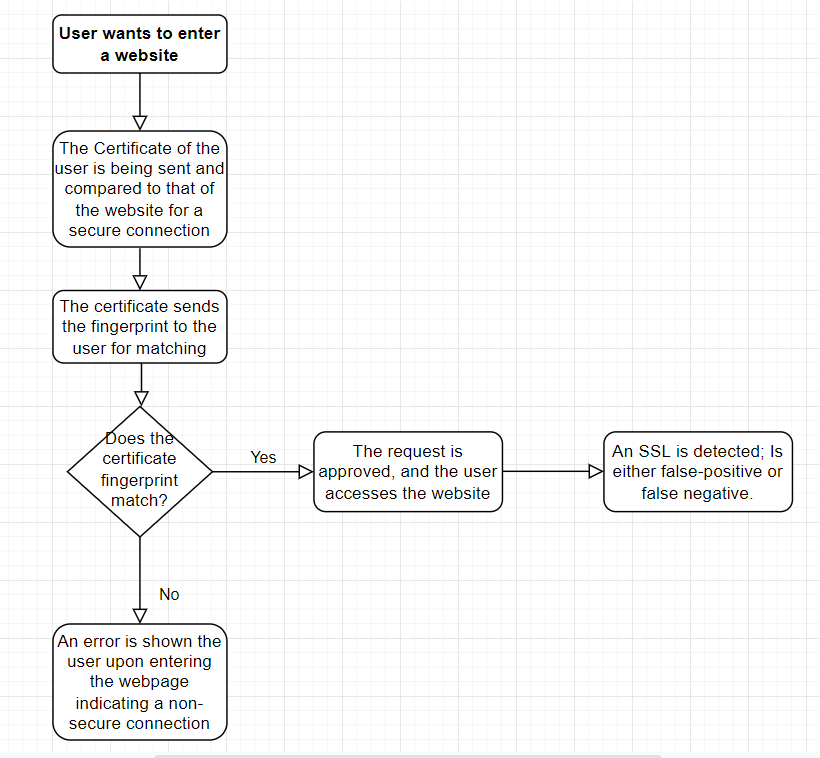

Stefano Giron
Allen ISD Steam Center
Computer Science III
Mr. Ben-Yaakov
August 25, 2022
Ever since the early stage of the internet, there has always been a method provided to ensure a safe and secure browsing experience for the users. The main 2 protocols that most people would be familiar with are the HTTP, or Hypertext Transfer Protocol Secure, or, HTTPS, or Hypertext Transfer Protocol Secure. The order version, HTTP, did not focus on protecting its users with an encrypted or private connection as much as the newer ones.. This is the main reason for the development of HTTPS, as it provided for an encrypted connection that would be very difficult to breach. At the beginning, it was primarily used in websites that required users private information, such as a bank account or data. Now that more sites are starting to use this protocol, it decreases the chances for data breaches or hackers who want to obtain sensitive information from online users.
At the beginning, HTTPS was primarily used in websites that required users private information, such as a bank account or data. Now, it is used to send data back and forth through encrypted connections to various servers, which then communicate to the site or information the user wants to access. However, because HTTPS was designed to provide the most secure connections for its users, it does not allow for institutions and schools to be able to manage their employers or students internet usage. To solve this problem, they developed the HTTPS Proxy Appliance, which works in conjunction with an encrypted server. But with this encryption, the proxy reroutes the traffic from the website that the user is trying to access, and the SSL certificate allows the data to travel from the proxy to the destination (Rankin). Now people believe that it is unethical and an intrusion of privacy for organizations and schools to be able to monitor where the attendees go with their devices, it is not the case. The users have the right to access the tools provided by the organizations, meaning that they are using the property of them, and therefore, are freely able to access what the people do with their devices. However, if the organizations were to access their users internet usage through their own personal devices, then there would be a more significant issue. Moving on, a problem with HTTP that is also for HTTPS is that they are still susceptible to attacks. For example, the MITM, or Man-in-the-middle attack, is a form of cybersecurity disruption where hackers are able to access the connection between two systems, such as a person and website or a person communicating with another person (Crowdstrike). This can lead to the collection of personal data, including passwords, and credit card information. In some cases, these hackers create a fake destination, where they gain access to networks and target poorly secured DNS servers, and install malware without the users noticing and take whatever information they desire.
With these amounts of attacks, there have been many attempts or processes in order to minimize the chances for hackers to access information. One of these methods is the hash. Hashing involves an authentication process for masking passwords and personal information through a certain set of keys (Constantin). Unlike encryption, the hash does not reveal the true data as their functions are not reversible, which could be considered an advantage over encryption. Another process to ensure the protection of personal data is called Certificate Authentication (Team S). CA is used by companies and organizations through a three-step process of Digital Certificates (Dormann). First, the organization requests the Digital certificates, which confirms the identity of the user accessing the data. Then, the data is transferred through a secure server to the destination, and finally the webpages are confirmed so that the data is collected.
Fingerprints have a very specific hash, meaning that one slight change can lead to a whole new fingerprint. This would most likely occur during an SSL Interception, where an SSL detects a change through the certificate. An alert would be made, showing that the fingerprint has changed completely. This can occur if the certificate the user has matches the certificate of the website they are trying to access. The best way to ensure that there are no issues with the certificate is to always go to safe websites with a secure encryption, such as any website with the HTTPS proxy located in its address. This is shown in the flowchart below. In some cases, however, there can be errors in these interceptions (Gibson). False-positive occurs when there might be an SSL interception, but because there are multiple certificates in a website, one might believe that the connection is being affected. False-negative occurs when a certificate does not even detect any SSL interception, when in reality, there is. The certificate matching does not occur, leading to the false belief that the connection is indeed secure.
References Cited
Steve Gibson, GRC : SSL TLS HTTPS web server certificate fingerprints . GRC | SSL TLS HTTPS Web Server Certificate Fingerprints . Retrieved August 26, 2022, from https://www.grc.com/fingerprints.htm#top
Rankin, T. (2022, May 4). How to set up an HTTPS proxy server. GoDaddy Blog. Retrieved August 26, 2022, from https://www.godaddy.com/garage/how-to-set-up-an-https-proxy-server/
What is a man-in-the-middle attack? + MITM attack prevention. crowdstrike.com. (2022, February 14). Retrieved August 26, 2022, from https://www.crowdstrike.com/cybersecurity-101/man-in-the-middle-mitm-attacks/
Constantin, L. (2021, January 13). What is hashing: How this cryptographic process protects passwords. CSO Online. Retrieved August 26, 2022, from https://www.csoonline.com/article/3602698/hashing-explained-why-its-your-best-bet-to-protect-stored-passwords.html
Team, S. S. L. S. (2021, December 9). What is a Certificate Authority (CA)? SSL.com. Retrieved August 26, 2022, from https://www.ssl.com/faqs/what-is-a-certificate-authority/
Dormann, W. (2015, March 13). The risks of SSL Inspection. SEI Blog. Retrieved August 26, 2022, from https://insights.sei.cmu.edu/blog/the-risks-of-ssl-inspection/